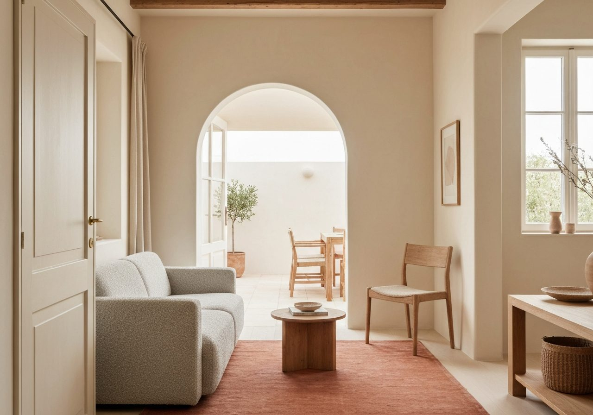
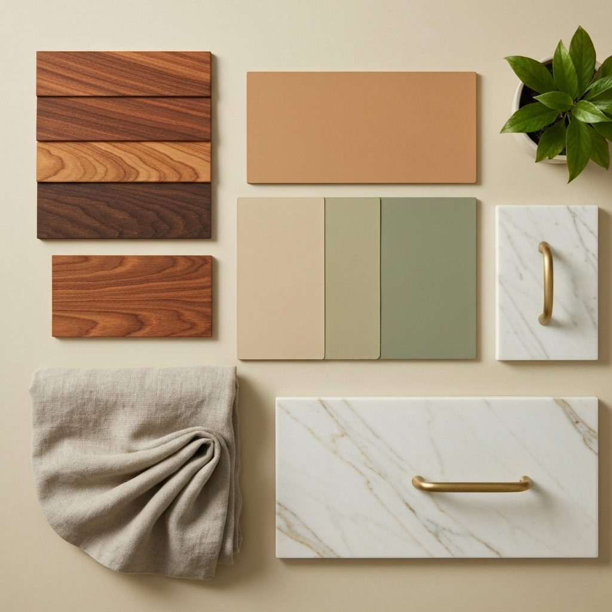

Te ayudo a planificar cada decisión antes de tocar la obra: presupuesto realista, materiales con criterio y un plan claro. Tú disfrutas del cambio; yo me encargo de que salga bien.
La mayoría de sustos en una obra no vienen de la obra: vienen de decisiones tomadas con prisa, sin información y sin un plan. Y para entonces, ya es tarde para cambiarlas.
Materiales, distribución, medidas, acabados… todo a la vez, sin saber qué es prioritario ni qué te vas a arrepentir de haber elegido.
Presupuestos que no puedes comparar, "extras" que aparecen a mitad de obra y un coste final que no se parece al que te dijeron.
Semanas de más porque faltaba definir algo, porque el material no era el correcto o porque nadie coordinó los gremios.
Vivir en obras, discutir por cada elección y la sensación constante de que algo se te está escapando.
No hace falta que vengas a mi estudio ni que contrates un proyecto entero. En una asesoría online ponemos orden en tu reforma: analizamos tu caso real, aclaramos prioridades y sales con un plan que puedes ejecutar con total seguridad.

Eliges día y hora en el calendario y me cuentas tu proyecto. Sin compromiso ni desplazamientos.
Analizamos tu caso a fondo: espacio, necesidades, presupuesto y estilo. Resolvemos tus dudas una a una.
Recibes checklist, presupuesto orientativo y —en Premium— planos, renders y shopping list para ejecutar sin miedo.
Dos formas de trabajar juntas. Ambas online, ambas pensadas para que tomes decisiones con seguridad.

Soy interiorista y estoy al frente de Siete Flamencos, mi estudio de decoración e interiorismo en Madrid. Llevo años ayudando a personas como tú a reformar su casa sin dejarse una fortuna ni la salud por el camino. He visto todos los sustos posibles… y cómo evitarlos.
Mi trabajo es simple: ponerme de tu lado antes de que empiece la obra, traducir el caos en un plan y darte el criterio profesional que no tienes por qué tener. Para que tu reforma sea justo lo que imaginabas.
"Estamos decorando la casa entera con ella y no podemos estar más contentos. Se ajusta a tu presupuesto y te propone ideas muy buenas."
— Estela"Cuando más estancados estábamos con la reforma y la decoración de la casa, apareció Belén y fue todo fácil."
— Helena"Totalmente recomendable. Una gran profesional. Cumplió perfectamente los plazos."
— MónicaReseñas reales de clientes de Siete Flamencos · Belén Isorna.
Para nada. Puedes venir con una idea vaga o con mil dudas. Precisamente por eso existe la asesoría: para poner orden desde el principio.
Sí. Todo es online por videollamada, así que trabajo con clientas de toda España sin que tengas que moverte de casa.
No ejecuto la obra: te doy el plan, el criterio y el presupuesto orientativo para que contrates y dirijas tu reforma con total seguridad, sin que nadie te la cuele.
Esencial pone orden y te da un plan y presupuesto. Premium añade planos a escala, renders, moodboard y shopping list: te lo llevas todo listo para ejecutar sin margen de error.
Puedes ampliar con sesiones de seguimiento cuando quieras. Muchas clientas empiezan por Esencial y luego dan el salto a Premium.
Reserva tu asesoría online y toma cada decisión con criterio, calma y un plan claro. Sin sustos.
Escríbeme por WhatsApp · 640 35 17 83O escríbeme a contacto@reformasinsustos.com